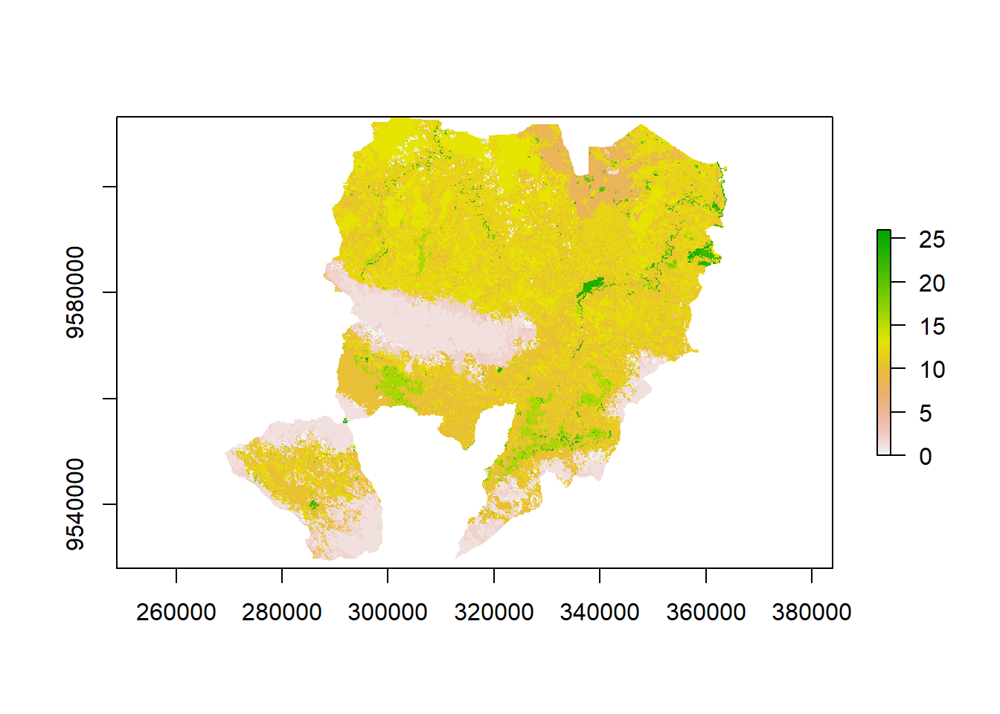
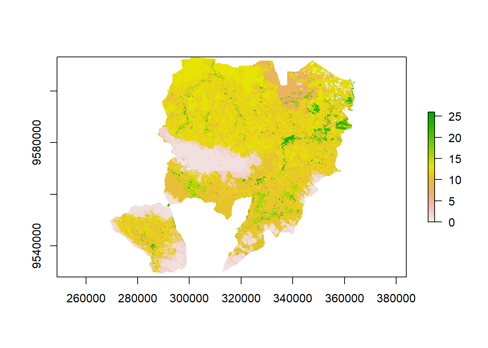
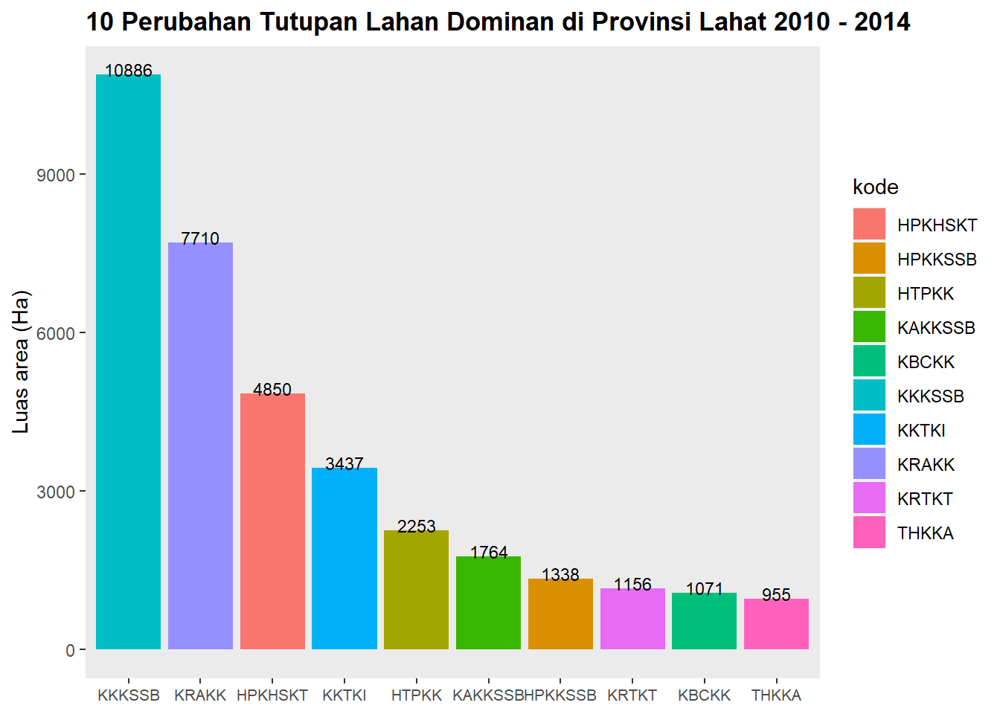

Pada proses manajemen data frame akan ditunjukkan karakteristik wilayah melalui analisis perubahan penggunaan lahan. Analisis perubahan tutupan lahan dilakukan untuk mengetahui kecenderungan perubahan tutupan lahan di suatu daerah pada satu kurun waktu. Analisis ini dilakukan dengan menggunakan data peta tutupan lahan pada dua periode waktu yang berbeda. Selain itu, dengan memasukkan batas administratif, dapat diketahui kecenderungan perubahan tutupan pada pada wilayah administratif yang ada.
Informasi yang dihasilkan melalui analisis ini dapat digunakan dalam proses perencanaan untuk berbagai hal diantaranya adalah:
- menentukan prioritas pembangunan,
- mengetahui faktor pemicu perubahan penggunaan lahan,
- merencanakan skenario pembangunan di masa yang akan datang,
- dan lain sebagainya
Data yang digunakan adalah data keruangan/spasial pada dua titik waktu yang berbeda dan data batas wilayah administratif. Selain itu digunakan pula data tabular yang berisi atribut dari tipe tutupan lahan maupun nama dari batas wilayah tersebut.
Data dapat diakses di
Package yang digunakan adalah
Tahap pertama adalah membaca data tabular yang berisi legenda tutupan lahan dan wilayah administratif
# tbl_admin <- read.table('data/batas_kec.csv', header = T, sep = ';')
tbl_legenda <- read.table('data/tupla.csv', header = T, sep = ';')# batas <- raster('data/batas_kec3.tif')
tupla2010 <- raster('data/LC2010.tif')
tupla2014 <- raster('data/LC2014.tif')
plot(tupla2010)
plot(tupla2014)
# luas_batas <- data.frame(freq(batas))
# luas_batas <- na.omit(luas_batas)
# colnames(luas_batas) <- c('ID', 'Luas')
# luas_batas
luas_tupla2010 <- data.frame(freq(tupla2010))
luas_tupla2010 <- na.omit(luas_tupla2010)
colnames(luas_tupla2010) <- c('ID', 'Luas')
luas_tupla2010## ID Luas
## 1 0 9842
## 2 1 53668
## 3 2 22013
## 4 3 1372
## 5 4 42
## 6 5 3
## 7 8 15030
## 8 9 3462
## 9 10 94328
## 10 11 32067
## 11 12 119796
## 12 13 65551
## 13 15 50
## 14 16 12209
## 15 18 6
## 16 19 1459
## 17 20 1551
## 18 21 9
## 19 22 461
## 20 23 236
## 21 24 2539
## 22 26 1158luas_tupla2014 <- data.frame(freq(tupla2014))
luas_tupla2014 <- na.omit(luas_tupla2014)
colnames(luas_tupla2014) <- c('ID', 'Luas')
luas_tupla2014## ID Luas
## 1 0 3783
## 2 1 44230
## 3 2 27338
## 4 3 349
## 5 4 42
## 6 5 3
## 7 8 18821
## 8 9 1824
## 9 10 95476
## 10 11 22433
## 11 12 117543
## 12 13 80345
## 13 15 49
## 14 16 10856
## 15 17 3
## 16 18 5
## 17 19 2840
## 18 20 1239
## 19 21 59
## 20 22 1262
## 21 23 1674
## 22 24 4196
## 23 26 2482Untuk mendapatkan informasi yang lebih lengkap terhadap ID yang sudah diperoleh dari praproses data, maka dilakukan data munging. Hal pertama yang dilakukan adalah menggabungkannya dengan data tabular yang berisi legenda dari tutupan lahan dan nama wilayah administratif.
# luas_batas <- merge(luas_batas, tbl_admin, by='ID')
luas_tupla2010 <- merge(luas_tupla2010, tbl_legenda, by='ID')
luas_tupla2014 <- merge(luas_tupla2014, tbl_legenda, by='ID')
luas_tupla1014 <- merge(luas_tupla2010, luas_tupla2014, by=c('ID', 'Tupla'))
colnames(luas_tupla1014) <- c('ID', 'Tutupan_lahan', 'Luas_10', 'Luas_14')Lakukan analisis sederhana untuk melihat tren perubahan
DT::datatable(luas_tupla1014 %>% mutate(luasan_perubahan = Luas_14 - Luas_10) %>% arrange(desc(luasan_perubahan)))Hitung pula laju perubahan lahan per tahun dengan rumus:
\[ \frac{Luas_{t_{i+1}} - Luas_{t_i}}{Luas_{t_{i+1}}} \cdot \frac{1}{t_{i+1}-t_i} \cdot 100\% \]
luas_tupla1014 %>% mutate(rerata_perubahan = ( (Luas_14 - Luas_10)/(Luas_14 * 4) ) * 100) %>% arrange(desc(rerata_perubahan))## ID Tutupan_lahan Luas_10 Luas_14 rerata_perubahan
## 1 23 Tambang 236 1674 21.4755078
## 2 21 Semak belukar 9 59 21.1864407
## 3 22 Rerumputan 461 1262 15.8676704
## 4 26 Tambak 1158 2482 13.3360193
## 5 19 Tebu 1459 2840 12.1566901
## 6 24 Lahan terbuka 2539 4196 9.8724976
## 7 8 Tanaman kayu industri 15030 18821 5.0355985
## 8 2 Hutan sekunder kerapatan tinggi 22013 27338 4.8695954
## 9 13 Kelapa sawit skala besar 65551 80345 4.6032734
## 10 10 Agroforestri kopi 94328 95476 0.3005991
## 11 4 Hutan rawa primer 42 42 0.0000000
## 12 5 Hutan rawa sekunder 3 3 0.0000000
## 13 12 Karet 119796 117543 -0.4791863
## 14 15 Kelapa 50 49 -0.5102041
## 15 16 Teh 12209 10856 -3.1157885
## 16 18 Sawah tadah hujan 6 5 -5.0000000
## 17 1 Hutan primer 53668 44230 -5.3346145
## 18 20 Tanaman semusim lain 1551 1239 -6.2953995
## 19 11 Karet agroforestri 32067 22433 -10.7364151
## 20 9 Kebun campuran 3462 1824 -22.4506579
## 21 3 Hutan sekunder kerapatan rendah 1372 349 -73.2808023Lakukan analisis lain untuk menghasilkan 10 dominan perubahan lahan di Provinsi Lahat
dummy1<-data.frame(nL1=1:nrow(tbl_legenda), divider=nrow(tbl_legenda):nrow(tbl_legenda))
dummy1<-expandRows(dummy1, 'divider')
dummy2<-data.frame(nL2=rep(1:nrow(tbl_legenda), nrow(tbl_legenda)))
comb<-cbind(dummy1, dummy2)
R<-(tupla2010*1) + (tupla2014*100^1)
lu.db<-as.data.frame(freq(R))
lu.db<-na.omit(lu.db)
lu.db$value_temp<-lu.db$value
lu.db$Var1<-lu.db$value_temp %% 100
lu.db$Var2<-floor(lu.db$value_temp/100)
land_use_chg <- lu.db %>% dplyr::select(count, Var1, Var2)
colnames(land_use_chg) <- c("Luas", "ID_LC1", "ID_LC2")
colnames(tbl_legenda) <- c("ID_LC1", "Tupla2010")
land_use_chg <- merge(land_use_chg, tbl_legenda, id="ID_LC1")
colnames(tbl_legenda) <- c("ID_LC2", "Tupla2014")
land_use_chg <- merge(land_use_chg, tbl_legenda, id="ID_LC2")
# top ten
topten <- land_use_chg %>% mutate(perubahan = paste0(Tupla2010, ' ke ', Tupla2014)) %>%
filter(Tupla2010 != Tupla2014) %>%
dplyr::select(perubahan, Luas) %>%
arrange(desc(Luas)) %>%
head(n=10)
DT::datatable(topten)topten$kode<-as.factor(toupper(abbreviate(topten$perubahan, minlength=5, strict=FALSE, method="both")))
topten## perubahan Luas kode
## 1 Karet ke Kelapa sawit skala besar 10886 KKKSSB
## 2 Karet agroforestri ke Karet 7710 KRAKK
## 3 Hutan primer ke Hutan sekunder kerapatan tinggi 4850 HPKHSKT
## 4 Karet ke Tanaman kayu industri 3437 KKTKI
## 5 Hutan primer ke Karet 2253 HTPKK
## 6 Karet agroforestri ke Kelapa sawit skala besar 1764 KAKKSSB
## 7 Hutan primer ke Kelapa sawit skala besar 1338 HPKKSSB
## 8 Karet ke Tebu 1156 KRTKT
## 9 Kebun campuran ke Karet 1071 KBCKK
## 10 Teh ke Karet agroforestri 955 THKKAggplot(data=topten, aes(x=reorder(kode, -Luas),y=Luas, fill=kode))+geom_bar(stat='identity',position='dodge')+
geom_text(data=topten, aes(x=kode, y=Luas, label=round(Luas, 1)),size=3, vjust=0.1) +
ggtitle("10 Perubahan Tutupan Lahan Dominan di Provinsi Lahat 2010 - 2014") +
labs(x = 'Jenis perubahan penutupan lahan', y='Luas area (Ha)') + guides(scale='none')+
theme(plot.title = element_text(lineheight= 5, face="bold")) + scale_y_continuous() +
theme(axis.title.x=element_blank(), axis.text.x = element_text(size=8),
panel.grid.major=element_blank(), panel.grid.minor=element_blank())